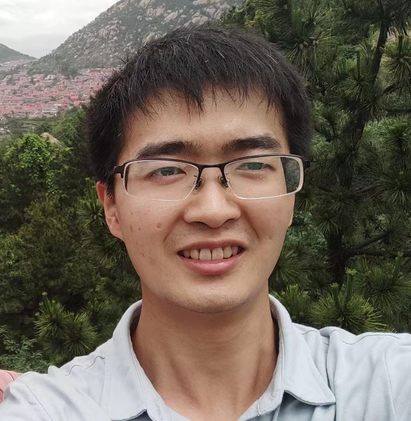

Sijie Zhao 赵思杰 sjzhao1996@gmail.com sjzhao1996@gmail.comGoogle Sholar |
 |
Biography
I am currently a researcher at Tencent AI Lab, focusing on AIGC and multimodal foundation models. I got my B.Eng. and M.Eng. degree from Nanjing University, School of Electronic Science and Engineering, advised by Prof. Tao Yue
News
- [09/2024] We release StereoCrafter, towards long and high-fidelity stereoscopic 3D generation from monocular videos.
- [09/2024] We release DepthCrafter, which is able to generate high-quality depth for open-world videos.
- [05/2024] We release CV-VAE, a compatible video VAE for video generation.
- [04/2024] We release SEED-X, the latest in our SEED series, which unifies multi-granularity comprehension and generation.
- [10/2023] We release SEED-LLaMA, which is able to understand and generate images simultaneously
Publications
 |
StereoCrafter: Diffusion-based Generation of Long and High-fidelity Stereoscopic 3D from Monocular Videos,
Sijie Zhao*, Wenbo Hu*, Xiaodong Cun*, Yong Zhang#, Xiaoyu Li#, Zhe Kong, Xiangjun Gao, Muyao Niu, Ying Shan Arxiv, 2024 [paper | project] |
|
DepthCrafter: Generating Consistent Long Depth Sequences for Open-world Videos,
Wenbo Hu*#, Xiangjun Gao*, Xiaoyu Li*#, Sijie Zhao, Xiaodong Cun, Yong Zhang, Long Quan, Ying Shan Arxiv, 2024 [paper | project | code] |
|
|
CV-VAE: A Compatible Video VAE for Latent Generative Video Models,
Sijie Zhao, Yong Zhang#, Xiaodong Cun, Shaoshu Yang, Muyao Niu, Xiaoyu Li, Wenbo Hu, Ying Shan NeurIPS, 2024 [paper | project | code] |
|
|
SEED-X: Multimodal Models with Unified Multi-granularity Comprehension and Generation,
Yuying Ge*, Sijie Zhao*, Jinguo Zhu*, Yixiao Ge, Kun Yi, Lin Song, Chen Li, Xiaohan Ding, Ying Shan, Arxiv, 2024 [paper | code] |
|
|
UniRepLKNet: A Universal Perception Large-Kernel ConvNet for Audio Video Point Cloud Time-Series and Image Recognition,
Xiaohan Ding*, Yiyuan Zhang*, Yixiao Ge, Sijie Zhao, Lin Song, Xiangyu Yue, Ying Shan CVPR, 2024 [paper | code] |
|
|
Making LLaMA SEE and Draw with SEED Tokenizer,
Yuying Ge*, Sijie Zhao*, Ziyun Zeng, Yixiao Ge, Chen Li, Xintao Wang, Ying Shan ICLR, 2024 [paper | code | project] |
|
|
GPT4Tools: Teaching Large Language Model to Use Tools via Self-instruction,
Rui Yang*, Lin Song*#, Yanwei Li, Sijie Zhao, Yixiao Ge, Xiu Li, Ying Shan NeurIPS, 2023 [paper | code | project] |
|
|
Sticker820K: Empowering Interactive Retrieval with Stickers,
Sijie Zhao, Yixiao Ge, Zhongang Qi, Lin Song, Xiaohan Ding, Zehua Xie, Ying Shan Arxiv, 2023 [paper ] |
|
|
Fisher Information Guidance for Learned Time-of-flight Imaging,
Jiaqu Li, Tao Yue, Sijie Zhao, Xuemei Hu CVPR, 2022 [paper ] |
|
|
Distribution-aware Adaptive Multi-bit Quantization,
Sijie Zhao, Tao Yue, Xuemei Hu CVPR, 2021 [paper ] |
Education
Master, School of Electronic Science and Engineering, Nanjing University, 2019 - 2022
Bachelor, School of Electronic Science and Engineering, Nanjing University, 2015 - 2019
Experiences
Researcher in Tencent AI Lab, 2022 - present
Intern in Tencent AI Lab, 2021 - 2022
Intern in Ant Group, 2021.
Intern in Kuaishou Inc. , 2021.
© Sijie Zhao | Last updated: Oct. 2024